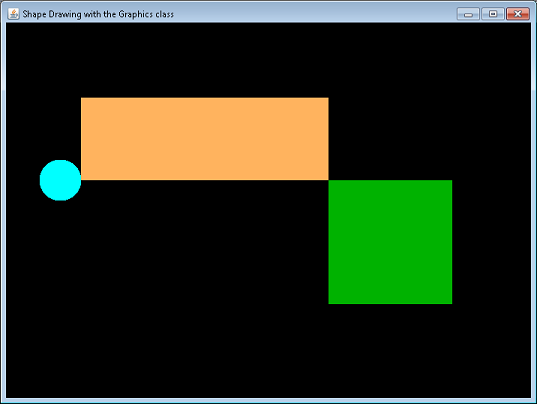

CSC 120
Review for Test 1
- Practice System.out.println and arithmetic operators.
- Create a new Netbeans project called Test1Review-A. Make sure the
Location is in your CSC120\Java folder.
- Minimize NetBeans, but do not close the project or NetBeans.
- Copy needed files into your src folder.
- In a web browser right click on the link for this
file:
MUPanel.java,
choose Save Target As... and save the file in the src folder of
your project.
- Do NOT run the
program yet!!
- Look at the code in the
MUPanel class. Using paper and pencil,
write down what you think the Java Console output will be. Then, run the program to
see if your answers were correct.
WARNING: If you use a calculator, you need
to be sure that your answers for division (/) and remainder (%) operations are correct
for the way Java interprets those operations!
- Declare, instantiate, and use objects from an existing class.
- Create a new Netbeans project called Test1Review-B. Make sure the
Location is in your CSC120\Java folder.
- Minimize NetBeans, but do not close the project or NetBeans.
- Copy needed files into your src folder.
- In a web browser right click on each of
MUPanel.java, and
Tester.java,
and choose Save Target As... and save the files in the src
folder of your project, renaming them to have a .java extension.
- Look over the Tester class.
- Then edit MUPanel.java so that it contains code that declares,
instantiates and draws three Tester objects.
- The objects should appear in a straight line evenly spaced
across the output window. Make sure that one of the objects is WHITE when
you instantiate them in MUPanel.java.
- Run the program and ensure that it works as described here.
- Use methods of the
Graphics class to draw specific shapes.
- Create a new Netbeans project called Test1Review-C. Make sure the
Location is in your CSC120\Java folder.
- Minimize NetBeans, but do not close the project or NetBeans.
- Copy needed files into your src folder.
- In a web browser right click on
MUPanel.java,
and choose Save Target As... and save the files in the src
folder of your project with a .java extension.
- In the
paintComponent method of the MUPanel class, write code that does the following:
- Fill a rectangle that is three times as wide as it is high, in whatever color you wish.
- Next, change the drawing color, and then fill a square that is half as wide as the first
rectangle, and whose upper-left corner point is the lower-right corner point of the
first rectangle.
- Then change the drawing color to a third color that is different than the other two, and fill a
circle that is half as high as the original rectangle, and touches the lower-left corner point
of that rectangle at the middle-right point of the circle (the point on the circle that would
be EAST on a compass, or 0 degrees if we think of a Java arc).
- Your shapes should be touching as in this illustration:
